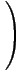

| Transversality Conjecture |
|
15 |
| (*) | det |
|
 | = 0 | for each i = 1,...,mp |
If the Transversality Conjecture holds, we
can analytically follow the solutions from those constructed in
the asymptotic result, and this implies the full
Shapiro Conjecture.
The discriminant is a polynomial in the parameters s1, s2, ..., smp whose zeroes are exactly the values of the parameters giving multiple solutions, which also correspond to polynomials F(t) over which the Wronski map is ramified.
The Transversality Conjecture implies that the discriminant does not vanish when the parameters s1, s2, ..., smp are real and distinct.